原文连接:https://www.cnblogs.com/nqdxt/p/11612977.html
前言
主要通过后端 Spring Boot 技术和前端 Vue 技术来简单开发一个demo，实现增删改查、分页功能以及了解Springboot搭配vue完成前后端分离项目的开发流程。
开发栈
前端
- 开发工具：WebStorm
- 开发框架：vue + axios
- 包管理工具: npm
- 打包工具：webpack
后端
- 开发工具：IDEA
- 开发框架：Springboot + mybatis
- 打包工具：maven
- 数据库： MySQL
PS：假设以上的的工具你都安装好啦，写CRUD小DEMO时进坑了，这篇blog参考一下，仅供参考，仅供参考😤，，如有不足请不吝赐教。
后端开发环境搭建
1、File->New->Project...
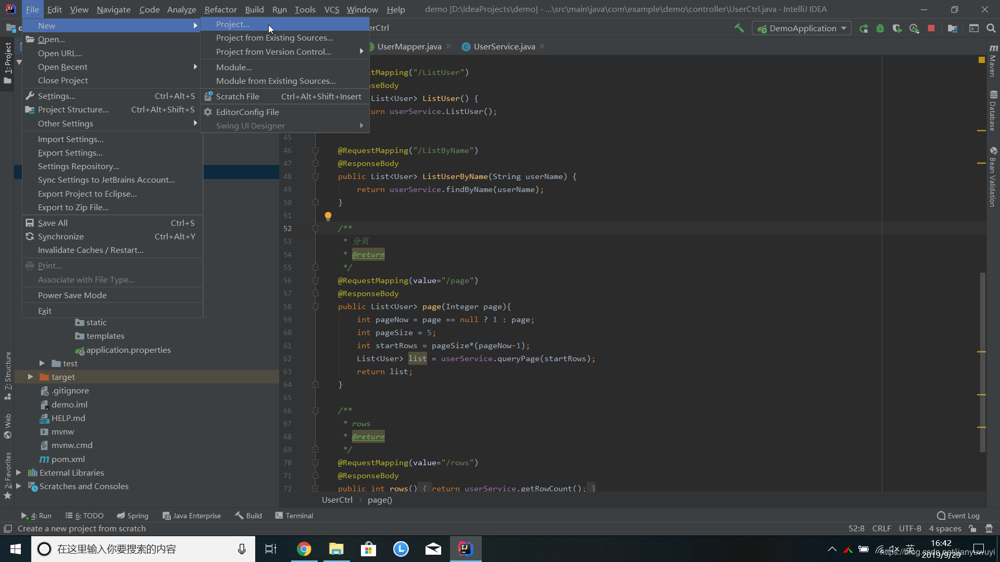
2、选择 Spring Initializr ，然后选择默认的 url 点击next

3、勾选Spring Web、SQL模板，next
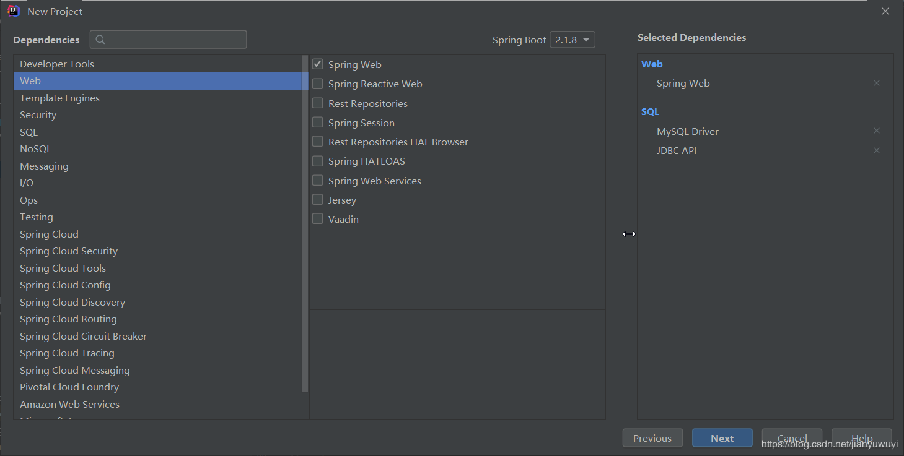
4、点击finish，搭建完成
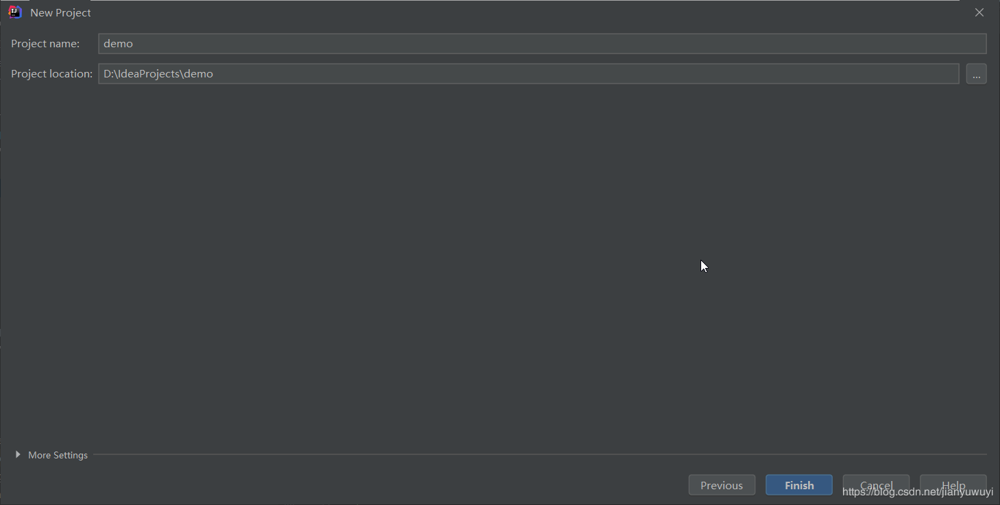
后端开发过程
1、更新pom.xml如下：
<?xml version="1.0" encoding="UTF-8"?>
<project xmlns="http://maven.apache.org/POM/4.0.0" xmlns:xsi="http://www.w3.org/2001/XMLSchema-instance"
xsi:schemaLocation="http://maven.apache.org/POM/4.0.0 http://maven.apache.org/xsd/maven-4.0.0.xsd">
<modelVersion>4.0.0</modelVersion>
<groupId>com.example</groupId>
<artifactId>demo</artifactId>
<version>0.0.1-SNAPSHOT</version>
<name>springboot-mybatis</name>
<!-- Spring Boot 启动父依赖 -->
<parent>
<groupId>org.springframework.boot</groupId>
<artifactId>spring-boot-starter-parent</artifactId>
<version>2.1.3.RELEASE</version>
</parent>
<properties>
<mybatis-spring-boot>1.2.0</mybatis-spring-boot>
<mysql-connector>5.1.39</mysql-connector>
</properties>
<dependencies>
<!-- Spring Boot Web 依赖 -->
<dependency>
<groupId>org.springframework.boot</groupId>
<artifactId>spring-boot-starter-web</artifactId>
</dependency>
<!-- Spring Boot Test 依赖 -->
<dependency>
<groupId>org.springframework.boot</groupId>
<artifactId>spring-boot-starter-test</artifactId>
<scope>test</scope>
</dependency>
<!-- Spring Boot Mybatis 依赖 -->
<dependency>
<groupId>org.mybatis.spring.boot</groupId>
<artifactId>mybatis-spring-boot-starter</artifactId>
<version>${mybatis-spring-boot}</version>
</dependency>
<!-- MySQL 连接驱动依赖 -->
<dependency>
<groupId>mysql</groupId>
<artifactId>mysql-connector-java</artifactId>
<version>${mysql-connector}</version>
</dependency>
<!-- Junit -->
<dependency>
<groupId>junit</groupId>
<artifactId>junit</artifactId>
<version>4.12</version>
</dependency>
</dependencies>
</project>2、新建 demo\src\main\java\com\example\demo\entity\User.java
package com.example.demo.entity;
public class User {
private int userId;
private String userDate;
private String userName;
private String userAddress;
//省略get() and set()
}3、更新demo\src\main\resources\application.properties
## 数据源配置
spring.datasource.url=jdbc:mysql://localhost:3306/test1?useUnicode=true&characterEncoding=utf8
spring.datasource.username=root
spring.datasource.password=123
spring.datasource.driver-class-name=com.mysql.jdbc.Driver
## Mybatis 配置
mybatis.typeAliasesPackage=org.spring.springboot.domain
mybatis.mapperLocations=classpath:mapper/*.xml
## 端口
server.port=80814、新建demo\src\main\java\com\example\demo\mapper\UserMapper.java
package com.example.demo.mapper;
import com.example.demo.entity.User;
import org.apache.ibatis.annotations.Mapper;
import java.util.List;
Mapper
public interface UserMapper {
public List<User> findUserByName(String userName);
public List<User> ListUser();
public List<User> queryPage(Integer startRows);
public int getRowCount();
public int insertUser(User user);
public int delete(int userId);
public int Update(User user);
}5、新建demo\src\main\resources\mapper\UserMapper.xml
<?xml version = "1.0" encoding = "UTF-8"?>
<!DOCTYPE mapper PUBLIC
"-//mybatis.org//DTD com.example.Mapper 3.0//EN"
"http://mybatis.org/dtd/mybatis-3-mapper.dtd">
<mapper namespace="com.example.demo.mapper.UserMapper">
<resultMap id="result" type="com.example.demo.entity.User">
<result property="userId" column="userId" />
<result property="userDate" column="userDate" />
<result property="userName" column="userName" />
<result property="userAddress" column="userAddress"/>
</resultMap>
<select id="ListUser" resultMap="result">
SELECT * FROM user
</select>
<select id="findUserByName" resultMap="result" parameterType="String">
SELECT * FROM user
where userName like concat(concat('%',#{userName}),'%')
order by userId desc
</select>
<select id="queryPage" resultMap="result" parameterType="Integer">
select * from user
order by userId desc
limit #{startRows},5
</select>
<select id="getRowCount" resultType="Integer">
select count(*) from user
</select>
<insert id="insertUser" parameterType="com.example.demo.entity.User">
INSERT INTO user
(
userId,userDate,userName,userAddress
)
VALUES (
#{userId},
#{userDate, jdbcType=VARCHAR},
#{userName, jdbcType=VARCHAR},
#{userAddress, jdbcType=VARCHAR}
)
</insert>
<delete id="delete" parameterType="int">
delete from user where userId=#{userId}
</delete>
<update id="Update" parameterType="com.example.demo.entity.User">
update user
set user.userDate=#{userDate},user.userName=#{userName},user.userAddress=#{userAddress}
where user.userId=#{userId}
</update>
</mapper>6、新建demo\src\main\java\com\example\demo\service\UserService.java
package com.example.demo.service;
import com.example.demo.entity.User;
import com.example.demo.mapper.UserMapper;
import org.springframework.beans.factory.annotation.Autowired;
import org.springframework.stereotype.Service;
import java.util.List;
Service
public class UserService {
@Autowired
private UserMapper userMapper;
public List<User> findByName(String userName) {
return userMapper.findUserByName(userName);
}
public List<User> queryPage(Integer startRows) {
return userMapper.queryPage(startRows);
}
public int getRowCount() {
return userMapper.getRowCount();
}
public User insertUser(User user) {
userMapper.insertUser(user);
return user;
}
public List<User> ListUser(){
return userMapper.ListUser();
}
public int Update(User user){
return userMapper.Update(user);
}
public int delete(int userId){
return userMapper.delete(userId);
}
}7、新建demo\src\main\java\com\example\demo\controller\UserCtrl.java
package com.example.demo.controller;
import com.example.demo.entity.User;
import com.example.demo.service.UserService;
import org.springframework.beans.factory.annotation.Autowired;
import org.springframework.web.bind.annotation.*;
import java.util.List;
RestController
public class UserCtrl {
@Autowired
private UserService userService;
@RequestMapping(value = "/delete", method = RequestMethod.POST)
public Integer delete(Integer userId) {
System.out.println(userId);
int result = userService.delete(userId);
return result;
}
@RequestMapping(value = "/update", method = RequestMethod.POST)
@ResponseBody
public String update(User user) {
int result = userService.Update(user);
if (result >= 1) {
return "修改成功";
} else {
return "修改失败";
}
}
@RequestMapping(value = "/insert", method = RequestMethod.POST)
public User insert(User user) {
return userService.insertUser(user);
}
@RequestMapping("/ListUser")
@ResponseBody
public List<User> ListUser() {
return userService.ListUser();
}
@RequestMapping("/ListByName")
@ResponseBody
public List<User> ListUserByName(String userName) {
return userService.findByName(userName);
}
/**
* 分页
* @return
*/
@RequestMapping(value="/page")
@ResponseBody
public List<User> page(Integer page){
int pageNow = page == null ? 1 : page;
int pageSize = 5;
int startRows = pageSize*(pageNow-1);
List<User> list = userService.queryPage(startRows);
return list;
}
/**
* rows
* @return
*/
@RequestMapping(value="/rows")
@ResponseBody
public int rows(){
return userService.getRowCount();
}
}8、启动MySQL数据库，新建或执行如下表：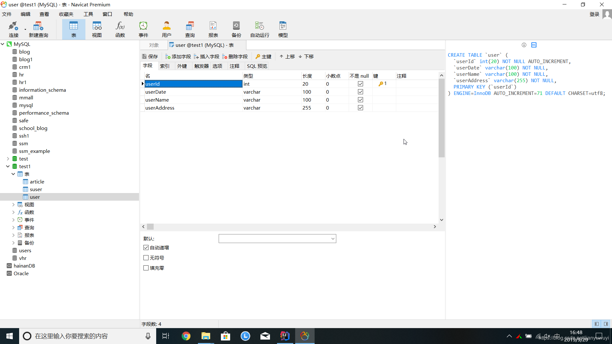
SET NAMES utf8mb4;
SET FOREIGN_KEY_CHECKS = 0;
-- ----------------------------
-- Table structure for user
-- ----------------------------
DROP TABLE IF EXISTS `user`;
CREATE TABLE `user` (
`userId` int(20) NOT NULL AUTO_INCREMENT,
`userDate` varchar(100) CHARACTER SET utf8 COLLATE utf8_general_ci NOT NULL,
`userName` varchar(100) CHARACTER SET utf8 COLLATE utf8_general_ci NOT NULL,
`userAddress` varchar(255) CHARACTER SET utf8 COLLATE utf8_general_ci NOT NULL,
PRIMARY KEY (`userId`) USING BTREE
) ENGINE = InnoDB AUTO_INCREMENT = 71 CHARACTER SET = utf8 COLLATE = utf8_general_ci ROW_FORMAT = Compact;
-- ----------------------------
-- Records of user
-- ----------------------------
INSERT INTO `user` VALUES (15, '2019-09-29T03:17:12.000Z', '王老三', '上海市普陀区金沙江路 1515 弄');
INSERT INTO `user` VALUES (16, '2019-09-29T03:27:05.000Z', '张小四', '上海市普陀区金沙江路 1514 弄');
INSERT INTO `user` VALUES (17, '2019-09-29T03:30:04.000Z', '王老五', '上海市普陀区金沙江路 1513弄');
INSERT INTO `user` VALUES (18, '2019-09-29T03:33:15.000Z', '小六子', '上海市普陀区金沙江路 1512弄');
INSERT INTO `user` VALUES (20, '2019-09-29T03:33:15.000Z', '王老八', '上海市普陀区金沙江路 1512弄');
INSERT INTO `user` VALUES (21, '2019-09-29T05:42:52.000Z', '王大拿', '上海市普陀区金沙江路 1511弄');
INSERT INTO `user` VALUES (22, '2019-09-29T05:43:50.000Z', '小九九', '上海市普陀区金沙江路 1510弄');
INSERT INTO `user` VALUES (23, '2019-09-29T05:43:50.000Z', '刘诗诗', '上海市普陀区金沙江路 1499弄');
INSERT INTO `user` VALUES (24, '2019-09-29T05:46:07.000Z', '扎昂四四', '上海市大湾区科技路');
INSERT INTO `user` VALUES (25, '2019-09-29T05:46:07.000Z', '扎昂四四新东方', '上海市大湾区科技路2001号');
INSERT INTO `user` VALUES (26, '2019-09-29T05:46:07.000Z', '王小虎', '上海市大湾区科技路2002号');
INSERT INTO `user` VALUES (27, '2019-09-29T05:46:07.000Z', '抽拉吧唧', '上海市大湾区科技路2003号');
INSERT INTO `user` VALUES (28, '2019-09-29T05:46:07.000Z', '年啦编辑', '上海市大湾区科技路2004号');
INSERT INTO `user` VALUES (29, '2019-09-29T05:46:07.000Z', '你多少', '上海市普陀区金沙江路 1211弄');
INSERT INTO `user` VALUES (30, '2019-09-29T05:46:07.000Z', '反发达', '上海市普陀区金沙江路 1212弄');
INSERT INTO `user` VALUES (31, '2019-09-29T05:51:20.000Z', '发官方', '上海市普陀区金沙江路 1213弄');
INSERT INTO `user` VALUES (32, '2019-09-29T05:51:20.000Z', '方还有', '上海市普陀区金沙江路 1214弄');
INSERT INTO `user` VALUES (33, '2019-09-29T05:51:20.000Z', '过不分', '上海市普陀区金沙江路 1498弄');
INSERT INTO `user` VALUES (34, '2019-09-29T05:51:20.000Z', '菜市场', '上海市普陀区金沙江路 1497弄');
INSERT INTO `user` VALUES (35, '2019-09-29T05:51:20.000Z', '权威的', '上海市普陀区金沙江路 1496弄');
INSERT INTO `user` VALUES (36, '2019-09-29T05:55:09.000Z', '冈反对的', '上海市大湾区科技路2001号');
INSERT INTO `user` VALUES (37, '2019-09-29T05:55:09.000Z', '冈反对', '上海市大湾区科技路2003号');
INSERT INTO `user` VALUES (38, '2019-09-29T05:55:09.000Z', '偶哦里面', '上海市大湾区科技路2004号');
INSERT INTO `user` VALUES (39, '2019-09-29T05:55:09.000Z', '偶哦韩大苏打', '上海市大湾区科技路2005号');
INSERT INTO `user` VALUES (40, '2019-09-29T05:55:09.000Z', '偶哦匀', '上海市大湾区科技路2006号');
INSERT INTO `user` VALUES (41, '2019-09-29T05:55:09.000Z', '敢哦匀', '上海市大湾区科技路2006号');
INSERT INTO `user` VALUES (42, '2019-09-29T05:55:09.000Z', '敢孩', '上海市大湾区科技路2006号');
INSERT INTO `user` VALUES (43, '2019-09-29T05:55:09.000Z', '敢女孩', '上海市大湾区科技路2007号');
INSERT INTO `user` VALUES (45, '2019-09-29T05:55:09.000Z', '工行行', '上海市大湾区科技路2008号');
INSERT INTO `user` VALUES (46, '2019-09-29T05:55:09.000Z', '家好吗', '上海市大湾区科技路2008号');
INSERT INTO `user` VALUES (47, '2019-09-29T05:55:09.000Z', '的程度', '上海市大湾区科技路2009号');
INSERT INTO `user` VALUES (48, '2019-09-29T05:55:09.000Z', '称得上', '上海市大湾区科技路2009号');
INSERT INTO `user` VALUES (49, '2019-09-29T05:55:09.000Z', '韩国和', '上海市大湾区科技路2010号');
INSERT INTO `user` VALUES (50, '2019-09-29T05:55:09.000Z', '韩好', '上海市大湾区科技路2010号');
INSERT INTO `user` VALUES (51, '2019-09-29T05:55:09.000Z', '韩吧', '上海市大湾区科技路2011号');
INSERT INTO `user` VALUES (52, '2019-09-29T05:55:09.000Z', '韩吧吧', '上海市大湾区科技路2012号');
INSERT INTO `user` VALUES (53, '2019-09-29T05:55:09.000Z', '长度是', '上海市大湾区科技路2013号');
INSERT INTO `user` VALUES (54, '2019-09-29T05:55:09.000Z', '比如合', '上海市大湾区科技路2014号');
INSERT INTO `user` VALUES (55, '2019-09-29T05:55:09.000Z', '如合境', '上海市大湾区科技路2015号');
INSERT INTO `user` VALUES (56, '2019-09-29T05:55:09.000Z', '如合国', '上海市大湾区科技路2016号');
INSERT INTO `user` VALUES (57, '2019-09-29T05:55:09.000Z', '如更好', '上海市大湾区科技路2017号');
INSERT INTO `user` VALUES (58, '2019-09-29T05:55:09.000Z', '如更法', '上海市大湾区科技路2018号');
INSERT INTO `user` VALUES (59, '2019-09-29T05:55:09.000Z', '反对', '上海市大湾区科技路2019号');
INSERT INTO `user` VALUES (60, '2019-09-29T05:55:09.000Z', '如国部', '上海市大湾区科技路2019号');
INSERT INTO `user` VALUES (61, '2019-09-29T06:04:15.000Z', '奇热网', '上海市普陀区金沙江路 1496弄');
INSERT INTO `user` VALUES (62, '2019-09-29T06:04:33.000Z', '反对法', '上海市普陀区金沙江路 1495弄');
INSERT INTO `user` VALUES (63, '2019-09-29T06:04:33.000Z', '的风格', '上海市普陀区金沙江路 1494弄');
INSERT INTO `user` VALUES (64, '2019-09-29T06:04:33.000Z', '广泛同', '上海市大湾区科技路2020号');
INSERT INTO `user` VALUES (65, '2019-09-10T06:04:33.000Z', '但仍然', '上海市普陀区金沙江路 1493弄');
INSERT INTO `user` VALUES (66, '2019-09-29T06:10:28.000Z', 'vdfv', '放到电饭锅的');
INSERT INTO `user` VALUES (67, '2019-09-14T16:00:00.000Z', '朱老六', '上海市高新区上海中心');
INSERT INTO `user` VALUES (69, '2019-09-10T16:00:00.000Z', '是的', ' 学生的三十四分');
INSERT INTO `user` VALUES (70, '2019-09-29T07:51:44.000Z', '张小子', '上海市浦东区1234号');
SET FOREIGN_KEY_CHECKS = 1;9、后端就写完了，整体结构如下：
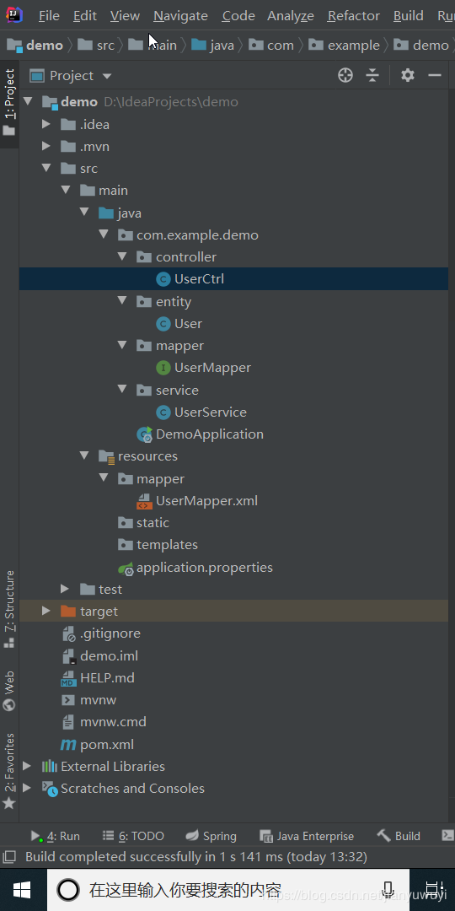
10、run 'DemoApplication'启动项目，控制台没报错就用浏览器测试一下，在浏览器中输入http://localhost:8081/page?page=3 如果能出现如下字符串就👌，已安装postman的可以每个方法都试一下：
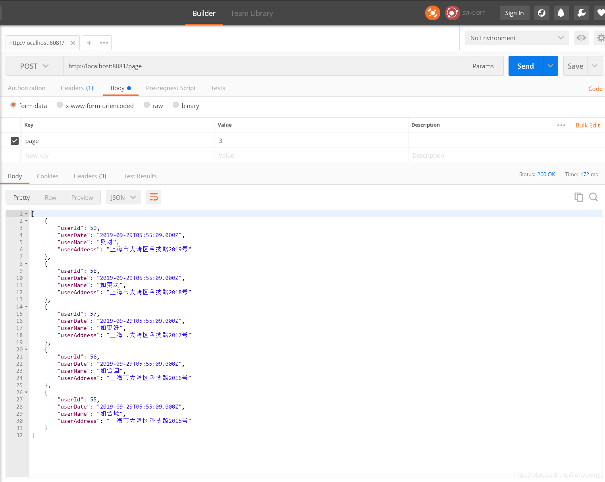
前端开发环境搭建
1、win+R->cmd->进入项目目录依次执行命令：vue init webpack projectName、cd projectName、npm install、npm run dev如图所示：
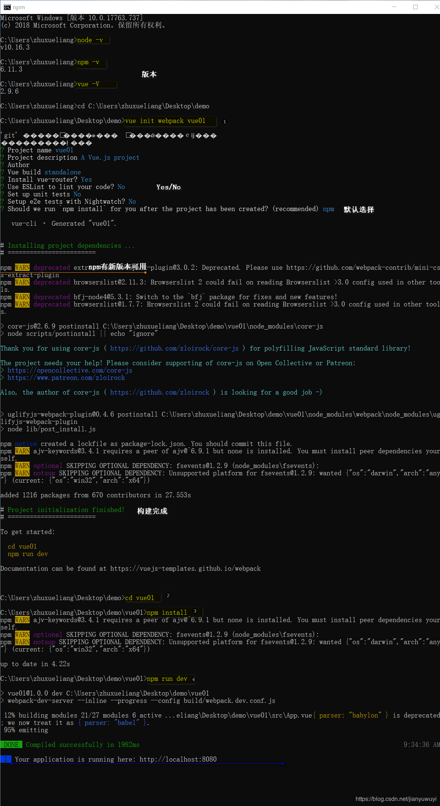
2、打开浏览器输入：http://localhost:8080，效果如图：
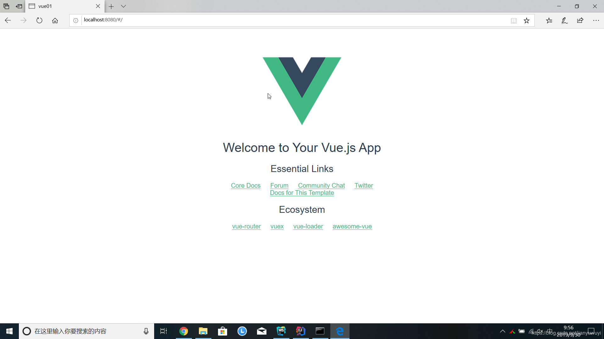
3、用WebStorm打开项目：File->Open...->vue01(projectName)
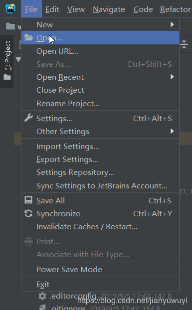
4、Vue-cli项目结构如图：
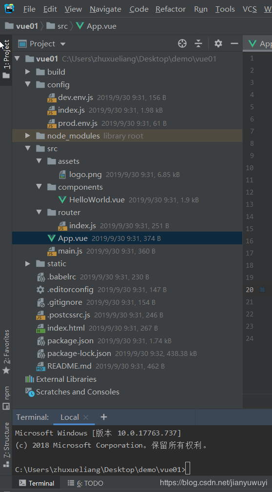
前端开发过程
1、在项目根目录安装axios执行命令npm install axios，安装element ui 执行命令npm i element-ui -S
2、更新vue01\src\App.vue
<template>
<div id="app">
<el-row type="flex" justify="center">
<el-col :xs="24" :sm="22" :md="20" :lg="20" :xl="18">
<router-view/>
</el-col>
</el-row>
</div>
</template>
<script>
export default {
name: 'App',
data() {
return {
}
},
methods: {
}
}
</script>
<style>
#app {
font-family: 'Avenir', Helvetica, Arial, sans-serif;
-webkit-font-smoothing: antialiased;
-moz-osx-font-smoothing: grayscale;
margin: 0px;
padding: 0px;
}
</style>3、更新vue01\src\main.js
// The Vue build version to load with the `import` command
// (runtime-only or standalone) has been set in webpack.base.conf with an alias.
import Vue from 'vue'
import App from './App'
import router from './router'
import elementUI from 'element-ui'
import 'element-ui/lib/theme-chalk/index.css'
import 'element-ui/lib/theme-chalk/display.css'
Vue.use(elementUI)
import axios from 'axios'
Vue.prototype.axios = axios
import qs from 'qs';
Vue.prototype.qs = qs;
Vue.config.productionTip = false
/* eslint-disable no-new */
new Vue({
el: '#app',
router,
components: { App },
template: '<App/>'
})4、更新vue01\src\components\HelloWorld.vue
<template>
<div>
<el-form :inline="true" class="demo-form-inline">
<el-form-item>
<el-input
v-model="search"
class="search_name"
size="mini"
placeholder="输入姓名查询">
</el-input>
</el-form-item>
<el-form-item>
<el-button
type="text"
@click="onSearch()"
class="el-icon-search">查询
</el-button>
</el-form-item>
<el-form-item>
<el-button
class="el-icon-refresh"
type="text"
@click="refreshData">刷新
</el-button>
</el-form-item>
<el-form-item>
<el-button
class="el-icon-circle-plus-outline"
type="text"
@click="dialogVisible = true">添加
</el-button>
</el-form-item>
</el-form>
<el-table
:data="tableData"
highlight-current-row
border
style="width: 100%">
<el-table-column
label="编号">
<template slot-scope="scope">
<span>{{ scope.row.userId }}</span>
</template>
</el-table-column>
<el-table-column
label="日期">
<template slot-scope="scope">
<i class="el-icon-time hidden-sm-and-down"></i>
<span>{{ scope.row.userDate }}</span>
</template>
</el-table-column>
<el-table-column
label="姓名">
<template slot-scope="scope">
<el-popover trigger="hover" placement="right">
<p>姓名: {{ scope.row.userName }}</p>
<p>住址: {{ scope.row.userAddress }}</p>
<p>日期：{{ scope.row.userDate }}</p>
<div slot="reference" class="name-wrapper">
<el-button type="text">{{ scope.row.userName }}</el-button>
</div>
</el-popover>
</template>
</el-table-column>
<el-table-column
label="住址">
<template slot-scope="scope">
<span>{{ scope.row.userAddress }}</span>
</template>
</el-table-column>
<el-table-column
label="操作"
fixed="right"
width="200">
<template slot-scope="scope">
<el-button
size="mini"
icon="el-icon-edit"
@click="handleEdit(scope.$index, scope.row)">编辑
</el-button>
<el-button
size="mini"
type="danger"
icon="el-icon-delete"
@click="handleDelete(scope.$index, scope.row)">删除
</el-button>
</template>
</el-table-column>
</el-table>
<el-form :model="ruleForm" :rules="rules" ref="ruleForm" label-width="70px" class="demo-ruleForm" size="medium">
<el-dialog
title="添加"
:append-to-body='true'
:visible.sync="dialogVisible"
width="80%"
:before-close="handleClose">
<el-input type="hidden" v-model="ruleForm.userId"/>
<el-form-item label="时间" prop="userDate">
<el-date-picker type="datetime" placeholder="选择日期" v-model="ruleForm.userDate" style="width: 100%;"></el-date-picker>
</el-form-item>
<el-form-item label="姓名" prop="userName">
<el-input v-model="ruleForm.userName"></el-input>
</el-form-item>
<el-form-item label="住址" prop="userAddress">
<el-input v-model="ruleForm.userAddress"></el-input>
</el-form-item>
<span slot="footer" class="dialog-footer">
<el-button @click="cancel()" size="medium">取 消</el-button>
<el-button @click="addUser()" type="primary" size="medium">确 定</el-button>
</span>
</el-dialog>
</el-form>
<el-form :model="ruleForm" :rules="rules" ref="ruleForm" label-width="70px" class="demo-ruleForm" size="medium">
<el-dialog
title="编辑"
:append-to-body='true'
:visible.sync="dialogUpdate"
width="80%"
:before-close="handleClose">
<el-input type="hidden" v-model="ruleForm.userId"/>
<el-form-item label="时间" prop="userDate">
<el-date-picker type="datetime" placeholder="选择日期" v-model="ruleForm.userDate" style="width: 100%;"></el-date-picker>
</el-form-item>
<el-form-item label="姓名" prop="userName">
<el-input v-model="ruleForm.userName"></el-input>
</el-form-item>
<el-form-item label="住址" prop="userAddress">
<el-input v-model="ruleForm.userAddress"></el-input>
</el-form-item>
<span slot="footer" class="dialog-footer">
<el-button @click="cancel()" size="medium">取 消</el-button>
<el-button @click="updateUser()" type="primary" size="medium">确 定</el-button>
</span>
</el-dialog>
</el-form>
<br>
<div class="pages">
<el-pagination
background
:disabled = "disablePage"
:current-page.sync="currentPage"
small
layout="prev, pager, next"
:page-size="pageSize"
:total="total"
@current-change="handleCurrentChange">
</el-pagination>
</div>
</div>
</template>
<script>
export default {
data() {
return {
ruleForm: {
userId: '',
userName: '',
userDate: '',
userAddress: ''
},
rules: {
userName: [
{ required: true, message: '请输入姓名', trigger: 'blur' },
{ min: 2, max: 7, message: '长度在 2 到 7 个字符', trigger: 'blur' }
],
userAddress: [
{ required: true, message: '请输入住址', trigger: 'blur' },
{ min: 5, message: '长度大于 5 个字符', trigger: 'blur' }
],
},
tableData: [],
search: '',
dialogVisible: false,
dialogUpdate: false,
pageSize: 5,
currentPage: 1,
total: 0,
disablePage: false
}
},
methods: {
handleEdit(index, row) {
this.dialogUpdate = true;
this.ruleForm = Object.assign({}, row); //这句是关键！！！
},
handleDelete(index, row) {
console.log(index, row);
this.$confirm('删除操作, 是否继续?', '提示', {
confirmButtonText: '确定',
cancelButtonText: '取消',
type: 'warning'
}).then(() => {
let postData = this.qs.stringify({
userId: row.userId,
});
this.axios({
method: 'post',
url:'/delete',
data:postData
}).then(response =>
{
this.getPages();
this.currentPage = 1;
this.axios.post('/page').then(response =>
{
this.tableData = response.data;
}).catch(error =>
{
console.log(error);
});
this.$message({
type: 'success',
message: '删除成功!'
});
console.log(response);
}).catch(error =>
{
console.log(error);
});
}).catch(() => {
this.$message({
type: 'info',
message: '已取消删除'
});
});
},
handleClose(done) {
this.$confirm('确认关闭？')
.then(_ => {
done();
})
.catch(_ => {});
},
handleCurrentChange() {
console.log(`当前页: ${this.currentPage}`);
let postData = this.qs.stringify({
page: this.currentPage
});
this.axios({
method: 'post',
url:'/page',
data:postData
}).then(response =>
{
this.tableData = response.data;
}).catch(error =>
{
console.log(error);
});
},
cancel() {
this.dialogUpdate = false;
this.dialogVisible = false;
this.emptyUserData();
},
emptyUserData(){
this.ruleForm = {
userName: '',
userDate: '',
userAddress: ''
}
},
addUser() {
let postData = this.qs.stringify({
userDate: this.ruleForm.userDate,
userName: this.ruleForm.userName,
userAddress: this.ruleForm.userAddress
});
this.axios({
method: 'post',
url:'/insert',
data:postData
}).then(response =>
{
this.axios.post('/page').then(response =>
{
this.tableData = response.data;
this.currentPage = 1;
this.$message({
type: 'success',
message: '已添加!'
});
}).catch(error =>
{
console.log(error);
});
this.getPages();
this.dialogVisible = false
console.log(response);
}).catch(error =>
{
console.log(error);
});
},
updateUser() {
let postData = this.qs.stringify({
userId: this.ruleForm.userId,
userDate: this.ruleForm.userDate,
userName: this.ruleForm.userName,
userAddress: this.ruleForm.userAddress
});
this.axios({
method: 'post',
url:'/update',
data:postData
}).then(response =>
{
this.handleCurrentChange();
this.cancel();
this.$message({
type: 'success',
message: '更新成功!'
});
console.log(response);
}).catch(error =>
{
this.$message({
type: 'success',
message: '更新失败!'
});
console.log(error);
});
},
onSearch() {
let postData = this.qs.stringify({
userName: this.search
});
this.axios({
method: 'post',
url: '/ListByName',
data: postData
}).then(response =>
{
this.tableData = response.data;
this.disablePage = true;
}).catch(error =>
{
console.log(error);
});
},
getPages() {
this.axios.post('/rows').then(response =>
{
this.total = response.data;
}).catch(error =>
{
console.log(error);
});
},
refreshData() {
location.reload();
}
},
created() {
/*this.axios.get('static/user.json').then(response =>
{
this.tableData = response.data.tableData;
this.total = response.data.tableData.length;
// console.log(JSON.parse(JSON.stringify(response.data))['tableData'])
});*/
this.axios.post('/page').then(response =>
{
this.tableData = response.data;
}).catch(error =>
{
console.log(error);
});
this.axios.post('/rows').then(response =>
{
this.total = response.data;
}).catch(error =>
{
console.log(error);
});
},
}
</script>
<style scoped>
.search_name{
width: 200px;
}
.pages{
margin: 0px;
padding: 0px;
text-align: right;
}
</style>前后端整合
方式一：
在vue01\config\index.js文件中配置proxyTable{}，如下：
proxyTable: {
'/': {
target:'http://localhost:8081', // 你请求的第三方接口
changeOrigin:true, // 在本地会创建一个虚拟服务端，然后发送请求的数据，并同时接收请求的数据，这样服务端和服务端进行数据的交互就不会有跨域问题
pathRewrite:{ // 路径重写，
'^/': '' // 替换target中的请求地址
}
}
},方式二：
在vue-cli项目根目录执行命令npm run build，编译完成后将dist/static文件夹copy至springboot项目的src/main/resources/static目录下然后直接启动springboot项目就OK了。
实现效果
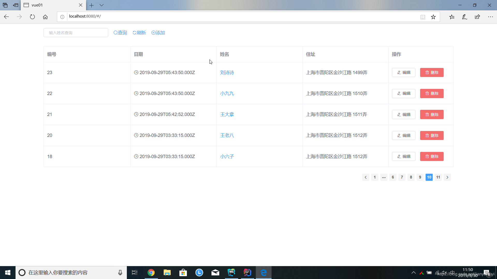
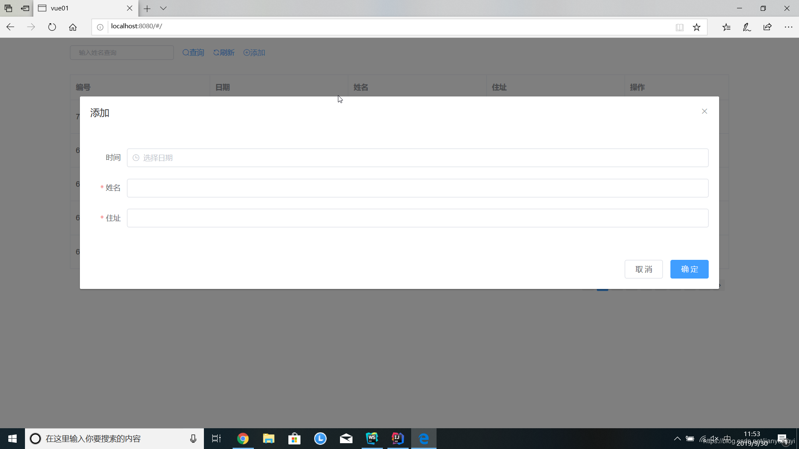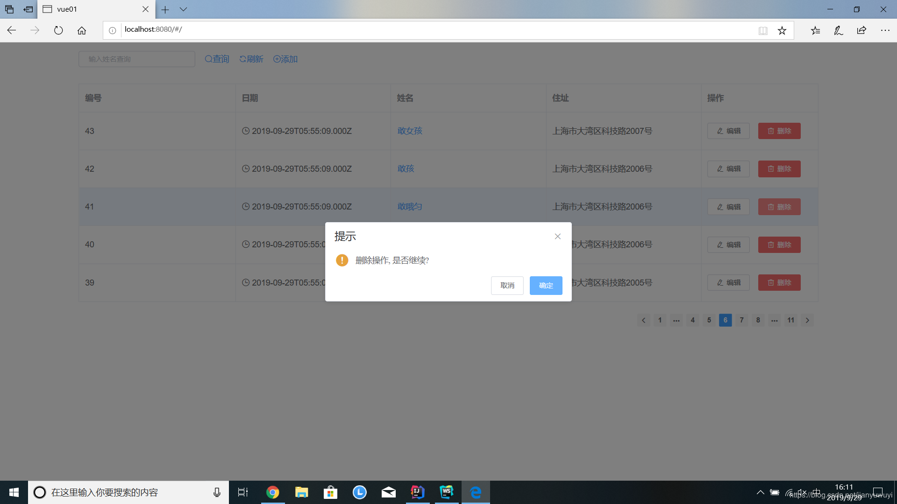
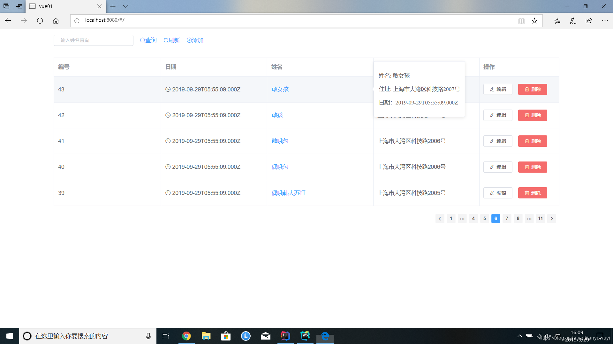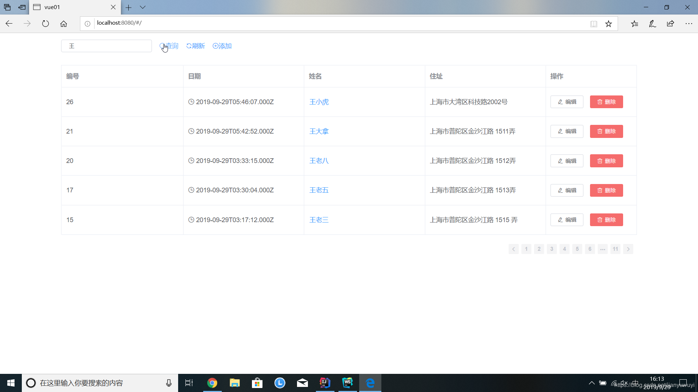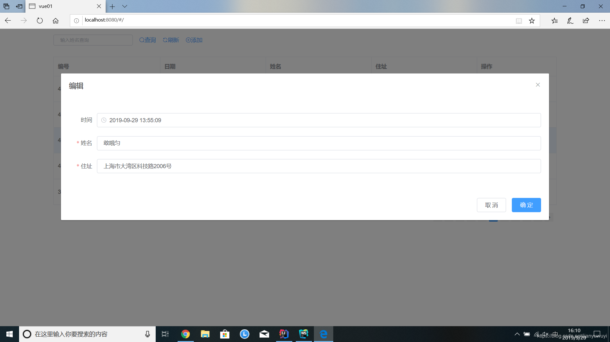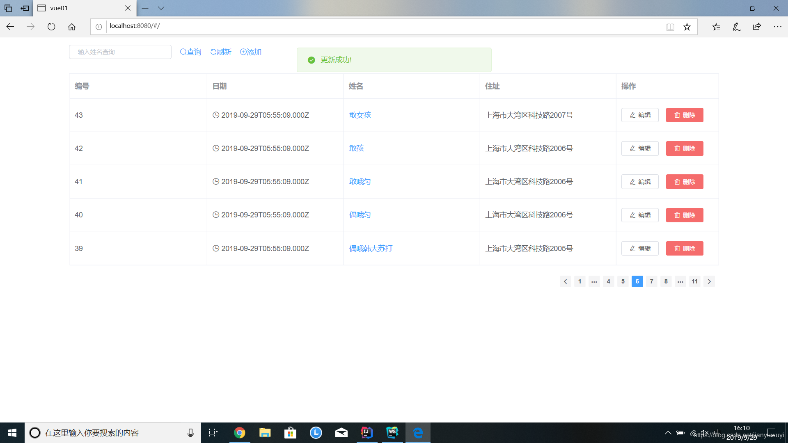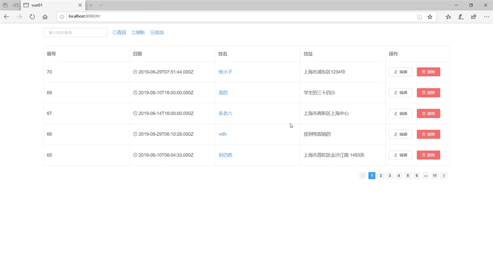
总结
大材小用，✍这篇博客の源码在我的GitHub上。
CSDN：https://blog.csdn.net/jianyuwuyi/article/details/101769510